2010-04-11 Kabul → Bamyan
～一期一會～
四時，的士停在 Baharastan Aria Guest House 的門口，街上黑和靜到不得了，覺得很幸運，預早安排了交通，不過這個的士司機去到巴士站卻收我 500 Afg，更沒有看見他有為我找不經 Unai Pass 的車。當我正在苦惱的時候，一個高個子行過來問我是不是去 Bamyan。
去 Bamyan 的車有幾種，有種便宜一點的小巴要坐十多人，有種貴一點只坐七人，叫做「duni」（還是 tuni？），高個子就是一部「duni」中的乘客，那部車上已經坐了數個人，好像只欠兩個乘客就可以開車，但我最大的顧慮仍是這車行哪條路。
「所有去 Bamyan 的車都是行南路的呀。」高個子說。「但這條路不是很危險嗎？」我問。「沒問題的。」他佷輕鬆地說，然後讓了個好位給我，中間行左邊的座位，微笑地說：「上車吧」。
這部車上有些人，和高個子一樣，英語流利，衣著光鮮，有一個更是西裝筆挺，身旁放著公事包，一副生意人的樣子，我感覺和他們一部車也很好。
不久夠人開車，途中，生意人和我傾談，叫我不用擔心這條路線。其實，當時間過了一會，當車離開公路進入山區，就把什麼也拋開了。除了因為完全不感到有什麼問題之外，是因為進入一個又一個山谷，被美景吸引，河在山崖下面流，屋有的建在阧峻的山壁。廣闊的風景畫，每繞過一個山就換一幅。
車子試過爆胎，換車輪，又遇上交通擠塞，因為有一部貨車死了火，在旁又有山泥阻住，要等待挖泥車來開路才可以繼續。但這樣正好為這段差不多十小時的路程作休息。我們都下車走去看熱鬧，或逛來逛去拍照，高個子為我拍照，「你就像個巴米揚人」。怎麼我又變了樣？
不過高個子也像新疆人樣子，阿富汗多數人是中亞人樣子。
短短大半天時間，在車中就聽了很多阿富汗流行曲，當中有很多電影《Afghan Star》的歌，這電影的歌果然有代表性。
Bamyan 谷地是廣闊肥沃土地，車一路由狹窄的山邊河邊漸漸去到較闊的地方，已經十分疲累，終於開始看見兩邊的山離開越來越遠，高個子叫我望向左面前方不遠處的山頭，說那就是 Shahr-e Zohak，the Red City。
Shahr-e Zohak 離 Bamyan 鎮只有十多公里，即是就來到了。
車進入一條好像村落的路，我對 Bamyan 鎮沒有任何認識，之前也沒有看過什麼相片，心中想像以為應該和其他城市一樣，所以，我以為車仍在鎮外的一些落後村子，讓人下車，但當我觀察四周時，竟然看到 Mama Najaf 旅館名字。什麼？這裏就是 Bamyan 的小鎮？
高個子問我要去哪裏，我說 Zohak Hotel。「剛才經過了」他說車會繞上山，再回來，到時我可以下車。上山去，環境和剛才的 Bazaar 街完全不同，山上是廣闊的平地，有數間好的酒店。在 Kabul 的服裝店老闆娘就叫我去 Roof of Bamiyan Hotel，說那裏景色一流。
我也想住好一點，但在 Bamyan 的好的酒店，全都「山旮旯」咁遠，真是出入下下都 taxi，而且周圍好荒蕪，但最重要是回 Kabul 的「duni」由 Mama Najaf 那裏開出，還要是早上四時開，如果住在山上又要捱貴的士的了，所以還是住番 cheap cheap 的算。
不過 cheap 還 cheap，也真是我想不到簡陋成咁，尤其 Mama Najaf，雖然可以十美元獨佔三床房間，但一看過那個室外的廁所，即刻逃離去遠一點的 Zohak Hotel。
高個子在山上一間不知名 Guest House 門口下車，他留下他的姓名和電話，說有什麼事便找他，又說他是巴米揚旅遊的什麼 Advicer，他一下車就有人來迎接他了。另外西裝人也在山上另一個地方下車，問我願不願意用一百美元住一晚的酒店，我說當然不啦，他便叫司機載我回 Bazaar。
Zohak Hotel 的人完全不懂說英文，這幾天都是用身體語言，有關數目的就用紙筆溝通。三床房間 800 Afg 一晚，沒有熱水浴，但附近有 Hammam。
Bamyan 鎮很細小，人們在 Bamyan River 旁兩岸聚居，旅館在主要市集街，其他地方是民居。Bamyan 最著名的兩個站立的佛像，在 2001 年被塔利班炸毀了，只淨下兩個洞。由市集行過去，經過一些破舊的荒廢了的屋，近大佛的那一些建築都像破壞了。
在東面細小一點的大佛前有一條車路通往市集，車路兩旁整齊排列著大樹。初到步時被那個市集街嚇了一跳，但漸漸地，開始看見 Bamyan 的美麗，這個谷地被群山環繞，很寧靜舒服。
黃昏，回市集，被幾位年輕人叫住，和他們談話，跟他們行回大佛那邊。
他們是學生，在大佛東面的一所大學就讀，類似教育學院，培訓教師，這幾位年輕人，修的科目不同，但數年後就會是教師。其中一個名叫 Mohammad Taher 主修英語，說得最多話，我們沿著車路行向東面大佛，他們說阿富汗正在倒退中，問我認為如何令這國家變得更好。
我也不知道，但倒是想起一路以來眼見的境況，衛生環境差，道路破舊，公園沒人維修，但人們卻沒工做百無聊賴。和他們說了很多理想化和天馬行空的東西，最後才說得出最重要的，就是教育，這國家還有很多小孩沒錢上學。突然，我想到一樣東西，「不過你們有民主。」
然後又談起現任總統，Mohammad 是支持現任總統的，上一次大選也有投他一票，不過原來 Bamyan 的一位領袖也會參選，他們說他是很好的人，下一屆會選他。
從這班約二十歲的年輕人，看到阿富汗的希望和未來。生活困難，物質貧乏，機會少的環境，人們更會珍惜，連農民的兒子也認識和重視自己的權利，珍惜投票的機會，珍惜教育的機會。
Mohammad 問我是不是信佛的，我說不是，說到巴米揚佛古蹟的維修，都是德國日本幫助，為什麼沒有中國的，我無言以對。
我們進入東面大佛旁的一所宿舍，他們就住在這裏，每房有六個床位，他們的房住了四個學生，來自 Bamyan 附近的不同地區，讀不同科目，不同年級。
天就來黑，我想走了，想去 Hammam 洗澡，不希望像在 Mazar 時因太晚關了門。在這裏留了不久，就說要回去。Mohammad 問：「是不是很重要的事情？」
這個問題像打了我一下，我突然問自己，洗澡真的這麼重要嗎？澡可以慢慢洗，Hammam 可以慢慢去，在阿富汗哪裏也可以，何時也可以，將來也可以，但和 Mohammad 他們，一期一會，就只有這一次，以後，還會見面嗎？就這樣，我又繼續留下來。
到天黑，外面突然很大風很冷，Mohammad 送我回去 Zohak Hotel。Zohak 有食物吃，職員把食物送入房，綠茶和 Pulao（飯）100 Afg，飯夾雜葡萄乾，好味，飯裏藏著羊肉，很軟口，不太有羊味，啱我。
十時便沒電，睡著突然有人敲門，原來是警察查房，其實可不可以早點查的呢？
～一期一會～
四時，的士停在 Baharastan Aria Guest House 的門口，街上黑和靜到不得了，覺得很幸運，預早安排了交通，不過這個的士司機去到巴士站卻收我 500 Afg，更沒有看見他有為我找不經 Unai Pass 的車。當我正在苦惱的時候，一個高個子行過來問我是不是去 Bamyan。
去 Bamyan 的車有幾種，有種便宜一點的小巴要坐十多人，有種貴一點只坐七人，叫做「duni」（還是 tuni？），高個子就是一部「duni」中的乘客，那部車上已經坐了數個人，好像只欠兩個乘客就可以開車，但我最大的顧慮仍是這車行哪條路。
「所有去 Bamyan 的車都是行南路的呀。」高個子說。「但這條路不是很危險嗎？」我問。「沒問題的。」他佷輕鬆地說，然後讓了個好位給我，中間行左邊的座位，微笑地說：「上車吧」。
這部車上有些人，和高個子一樣，英語流利，衣著光鮮，有一個更是西裝筆挺，身旁放著公事包，一副生意人的樣子，我感覺和他們一部車也很好。
不久夠人開車，途中，生意人和我傾談，叫我不用擔心這條路線。其實，當時間過了一會，當車離開公路進入山區，就把什麼也拋開了。除了因為完全不感到有什麼問題之外，是因為進入一個又一個山谷，被美景吸引，河在山崖下面流，屋有的建在阧峻的山壁。廣闊的風景畫，每繞過一個山就換一幅。
車子試過爆胎，換車輪，又遇上交通擠塞，因為有一部貨車死了火，在旁又有山泥阻住，要等待挖泥車來開路才可以繼續。但這樣正好為這段差不多十小時的路程作休息。我們都下車走去看熱鬧，或逛來逛去拍照，高個子為我拍照，「你就像個巴米揚人」。怎麼我又變了樣？
不過高個子也像新疆人樣子，阿富汗多數人是中亞人樣子。
短短大半天時間，在車中就聽了很多阿富汗流行曲，當中有很多電影《Afghan Star》的歌，這電影的歌果然有代表性。
Bamyan 谷地是廣闊肥沃土地，車一路由狹窄的山邊河邊漸漸去到較闊的地方，已經十分疲累，終於開始看見兩邊的山離開越來越遠，高個子叫我望向左面前方不遠處的山頭，說那就是 Shahr-e Zohak，the Red City。
Shahr-e Zohak 離 Bamyan 鎮只有十多公里，即是就來到了。
車進入一條好像村落的路，我對 Bamyan 鎮沒有任何認識，之前也沒有看過什麼相片，心中想像以為應該和其他城市一樣，所以，我以為車仍在鎮外的一些落後村子，讓人下車，但當我觀察四周時，竟然看到 Mama Najaf 旅館名字。什麼？這裏就是 Bamyan 的小鎮？
高個子問我要去哪裏，我說 Zohak Hotel。「剛才經過了」他說車會繞上山，再回來，到時我可以下車。上山去，環境和剛才的 Bazaar 街完全不同，山上是廣闊的平地，有數間好的酒店。在 Kabul 的服裝店老闆娘就叫我去 Roof of Bamiyan Hotel，說那裏景色一流。
我也想住好一點，但在 Bamyan 的好的酒店，全都「山旮旯」咁遠，真是出入下下都 taxi，而且周圍好荒蕪，但最重要是回 Kabul 的「duni」由 Mama Najaf 那裏開出，還要是早上四時開，如果住在山上又要捱貴的士的了，所以還是住番 cheap cheap 的算。
不過 cheap 還 cheap，也真是我想不到簡陋成咁，尤其 Mama Najaf，雖然可以十美元獨佔三床房間，但一看過那個室外的廁所，即刻逃離去遠一點的 Zohak Hotel。
高個子在山上一間不知名 Guest House 門口下車，他留下他的姓名和電話，說有什麼事便找他，又說他是巴米揚旅遊的什麼 Advicer，他一下車就有人來迎接他了。另外西裝人也在山上另一個地方下車，問我願不願意用一百美元住一晚的酒店，我說當然不啦，他便叫司機載我回 Bazaar。
Zohak Hotel 的人完全不懂說英文，這幾天都是用身體語言，有關數目的就用紙筆溝通。三床房間 800 Afg 一晚，沒有熱水浴，但附近有 Hammam。
Bamyan 鎮很細小，人們在 Bamyan River 旁兩岸聚居，旅館在主要市集街，其他地方是民居。Bamyan 最著名的兩個站立的佛像，在 2001 年被塔利班炸毀了，只淨下兩個洞。由市集行過去，經過一些破舊的荒廢了的屋，近大佛的那一些建築都像破壞了。
在東面細小一點的大佛前有一條車路通往市集，車路兩旁整齊排列著大樹。初到步時被那個市集街嚇了一跳，但漸漸地，開始看見 Bamyan 的美麗，這個谷地被群山環繞，很寧靜舒服。
黃昏，回市集，被幾位年輕人叫住，和他們談話，跟他們行回大佛那邊。
他們是學生，在大佛東面的一所大學就讀，類似教育學院，培訓教師，這幾位年輕人，修的科目不同，但數年後就會是教師。其中一個名叫 Mohammad Taher 主修英語，說得最多話，我們沿著車路行向東面大佛，他們說阿富汗正在倒退中，問我認為如何令這國家變得更好。
我也不知道，但倒是想起一路以來眼見的境況，衛生環境差，道路破舊，公園沒人維修，但人們卻沒工做百無聊賴。和他們說了很多理想化和天馬行空的東西，最後才說得出最重要的，就是教育，這國家還有很多小孩沒錢上學。突然，我想到一樣東西，「不過你們有民主。」
然後又談起現任總統，Mohammad 是支持現任總統的，上一次大選也有投他一票，不過原來 Bamyan 的一位領袖也會參選，他們說他是很好的人，下一屆會選他。
從這班約二十歲的年輕人，看到阿富汗的希望和未來。生活困難，物質貧乏，機會少的環境，人們更會珍惜，連農民的兒子也認識和重視自己的權利，珍惜投票的機會，珍惜教育的機會。
Mohammad 問我是不是信佛的，我說不是，說到巴米揚佛古蹟的維修，都是德國日本幫助，為什麼沒有中國的，我無言以對。
我們進入東面大佛旁的一所宿舍，他們就住在這裏，每房有六個床位，他們的房住了四個學生，來自 Bamyan 附近的不同地區，讀不同科目，不同年級。
天就來黑，我想走了，想去 Hammam 洗澡，不希望像在 Mazar 時因太晚關了門。在這裏留了不久，就說要回去。Mohammad 問：「是不是很重要的事情？」
這個問題像打了我一下，我突然問自己，洗澡真的這麼重要嗎？澡可以慢慢洗，Hammam 可以慢慢去，在阿富汗哪裏也可以，何時也可以，將來也可以，但和 Mohammad 他們，一期一會，就只有這一次，以後，還會見面嗎？就這樣，我又繼續留下來。
到天黑，外面突然很大風很冷，Mohammad 送我回去 Zohak Hotel。Zohak 有食物吃，職員把食物送入房，綠茶和 Pulao（飯）100 Afg，飯夾雜葡萄乾，好味，飯裏藏著羊肉，很軟口，不太有羊味，啱我。
十時便沒電，睡著突然有人敲門，原來是警察查房，其實可不可以早點查的呢？
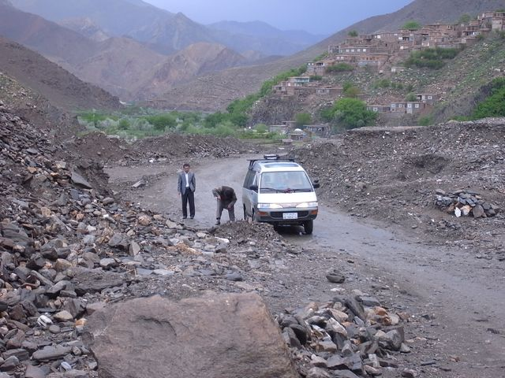
換車輪
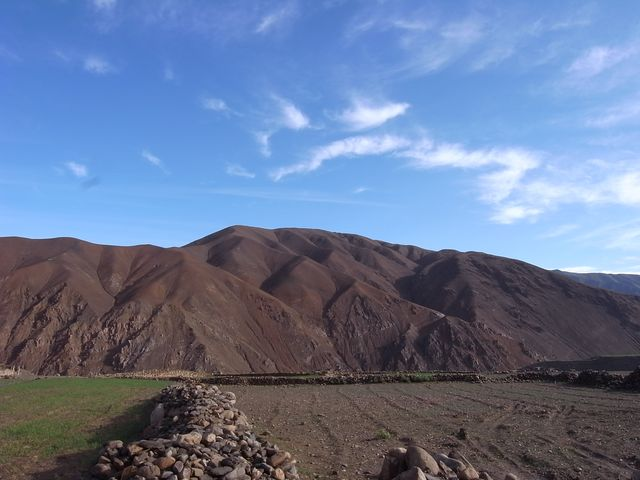
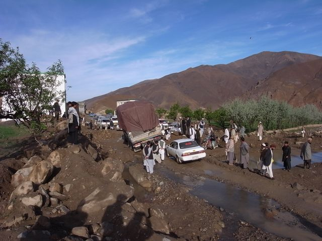
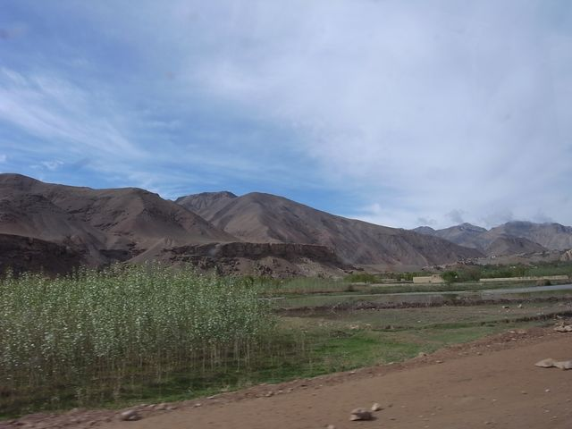
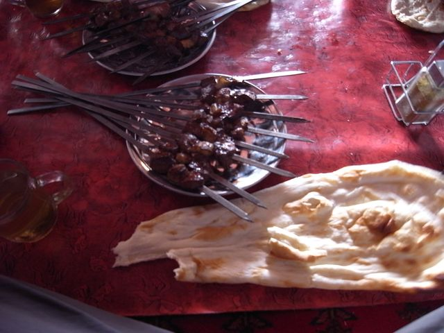
Kebab
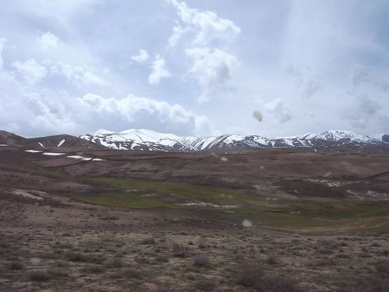
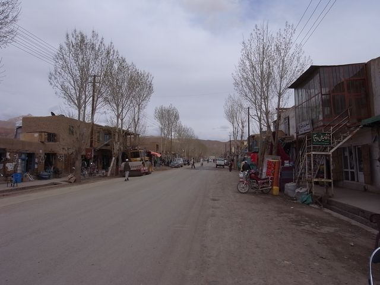
Bamyan
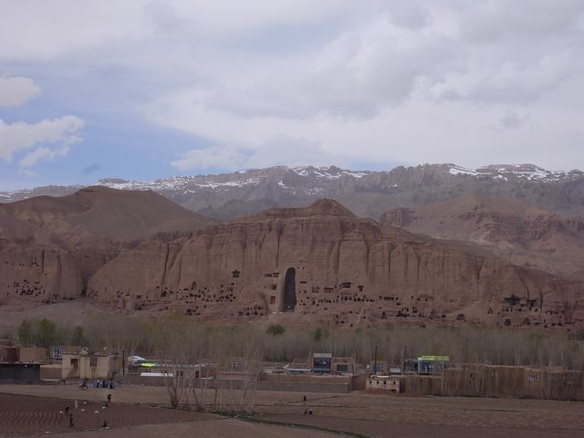
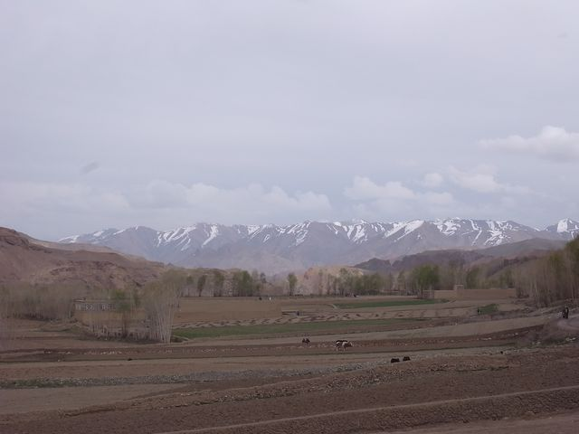
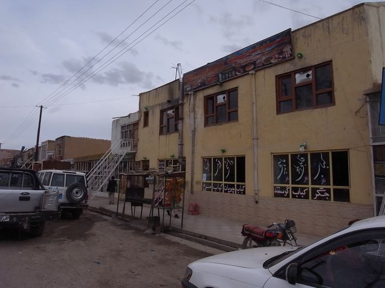
Zohak Hotel
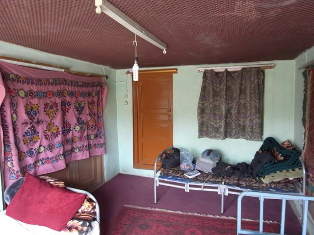
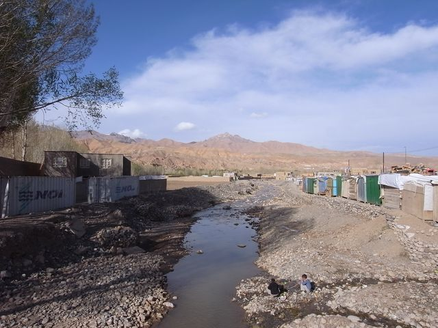
Bamyan River
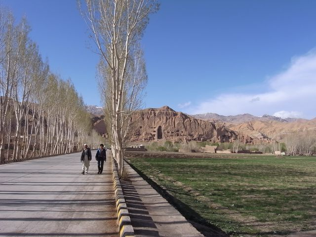
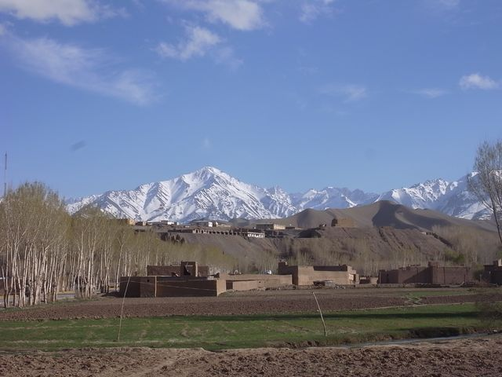
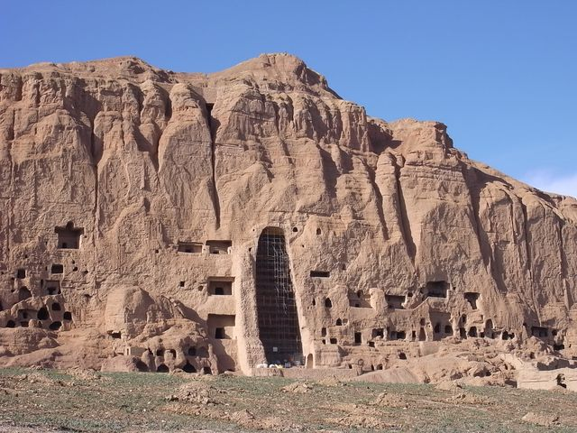
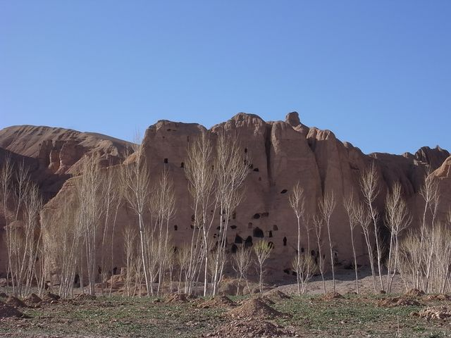
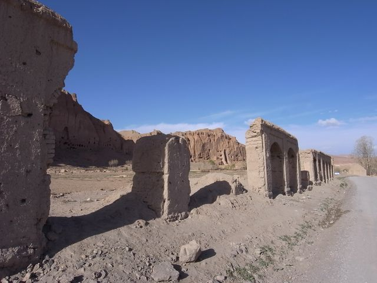
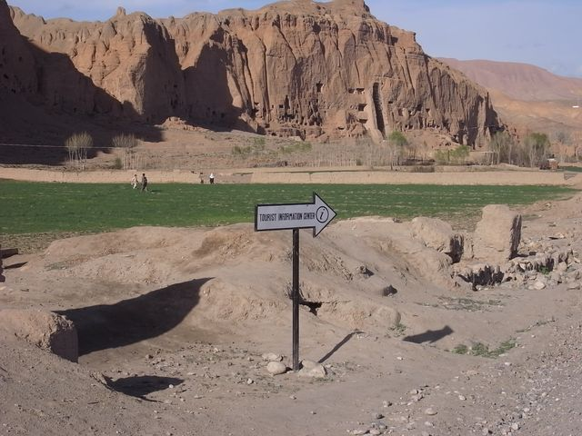
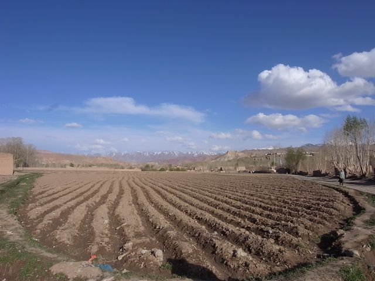
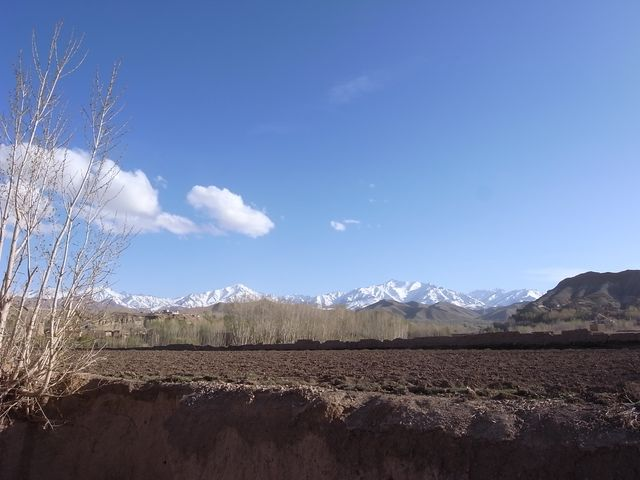
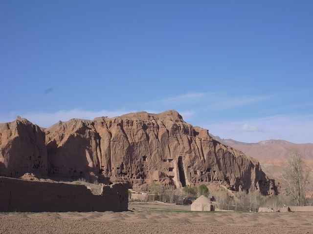
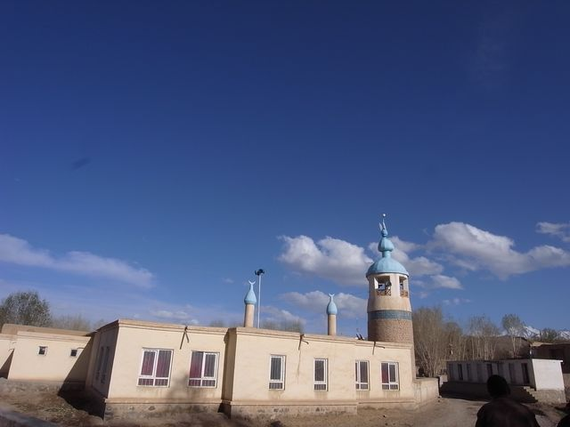
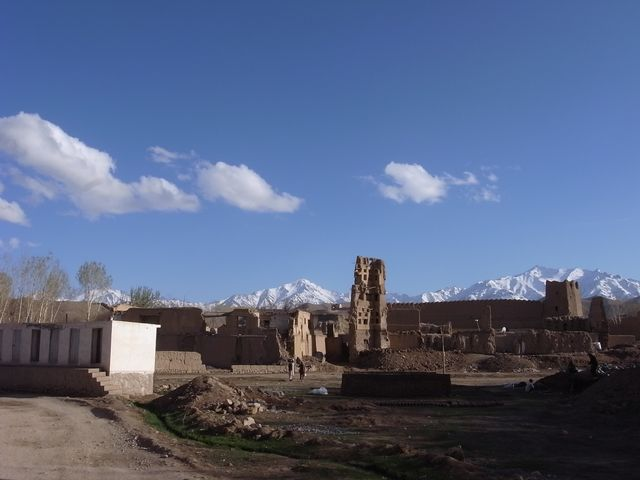
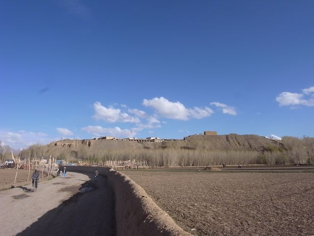
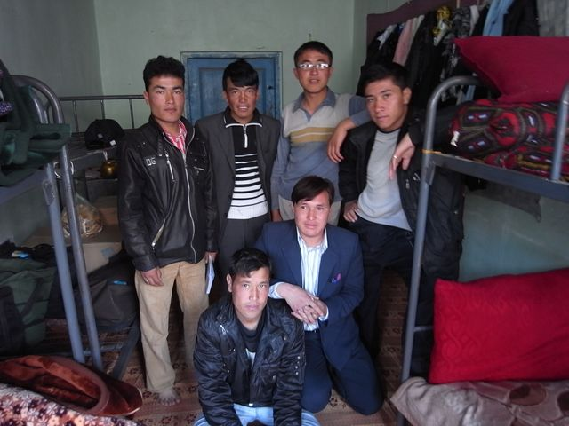
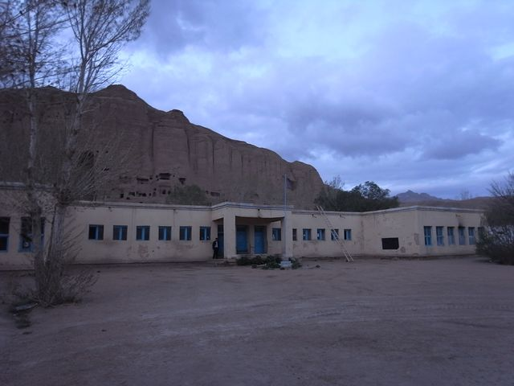
學生宿舍
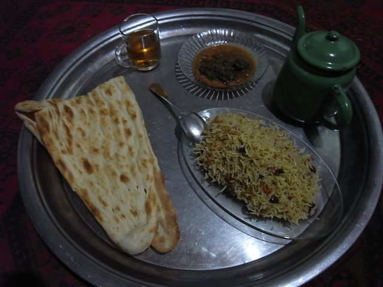
Pulao